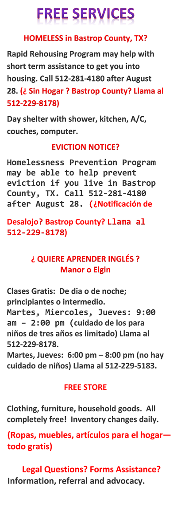

Advocacy Outreach helps build successful people and families with the resources to take care of their own needs, both immediate and long-term, and the ability to advocate for themselves in the community, schools and the workplace. Our Mission is to facilitate social change and justice through advocacy and a provision of services to the poor and disenfranchised in Bastrop County and surrounding rural areas.
HOLIDAY SCHEDULE
Advocacy Outreach will be closed from Friday, December 20 until Sunday, January 5. We will open again at 1 p.m. from Monday, January 6. Domestic violence clients should call the FCC 24-hour hotline at 512-303-7755 for immediate assistance. All other customers will receive calls returned AFTER Monday, January 6. Thank you and happy holidays! Advocacy Outreach estará cerrado desde el viernes 20 de diciembre hasta el domingo 5 de enero. Volveremos a abrir el lunes 6 de enero a la 1PM. Los clientes de violencia doméstica deben llamar a la línea directa de 24 horas de la FCC al 512-303-7755 para recibir asistencia inmediata. Para todos los demás clientes les regresaremos las llamadas DESPUÉS del lunes 6 de enero. ¡Gracias y felices fiestas!Currently homeless? Click Here!
ARE YOU ELIGIBLE FOR HOUSING ASSISTANCE? CLICK HERE FOR MORE INFORMATION
More information about housing programs in the Colorado Valley Homeless Coalition
Assessment Review Request for Homeless Clients
Information about the Violence Against Women Act as it relates to housing programs
Are you Homeless?
Do you have a current lease in Bastrop County and you are trying not to be evicted? Are you currently in Bastrop County, doubled up with another family, couch surfing OR paying for a motel? Are you UNSHELTERED in Bastrop County, as in living in your car, in a tent, or otherwise outdoors? Are you staying in an emergency family shelter in Bastrop County? Are you fleeing or attempting to flee domestic violence? Staying in OR trying to get into the Bastrop Women's Shelter? Are you located in Travis County? (Cities of Austin, Manor, Del Valle, Pflugerville)
ENGLISH LANGUAGE LEARNERS: Check out our classes for fall. Gratis!!
Shop at our FREE STORE for school clothes and fall coats. We have new merchandise every day.
HELP US TO HELP OTHERS! DONATE GENEROUSLY. Donations are used for direct client needs.
Advocacy Outreach Current Classes
Family Literacy Program ~ Programa de Alfabetizacion Familiar at Manor ISD Excel Campus Clases para aprender ingles
Clases de Ingles de noche para Adultos en Oak Meadows Elementary en Manor Information in English y espanol
Area Educational Opportunities
As of 2016 there are new options for the High School Equivalency exam. Click here for more info. Click here for info on ACC's GED Classes
Are you interested in English (ESL) classes at Austin Community College? Click here to find out about upcoming orientations http://www.austincc.edu/abe/esl/ora/
Are you interested in ESL classes in Elgin? Classes are held at the Elgin Library's Civic Center. Call 512-281-5678 for more information.http://www.elginpubliclibrary.org/
Advocacy Outreach
200-A Depot Street, P. O. Box 169, Elgin, Texas 78621
Phone 512 281-4180 ~ FAX 512 281-9599
501(c)3 Non-profit OrganizationLast updated: Mar 3, 2019 ~ Copyright 2019
Contact: Beth@advocacyoutreach.org